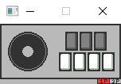

言語処理100本ノック：GO
言語処理100本ノックやってまーす。
ガウガウ的人工知能作ろうとしたけど、pythonのノウハウ知らなさ過ぎて言語処理100本ノックやることにしたよ！！
本当にプログラム初心者of初心者なんでコード見て「ここ最高にガバ」って部分あったらこっそり教えてくれると嬉しいれす。
||2018/02/12
ガウガウ的人工知能作ろうとしたけど、pythonのノウハウ知らなさ過ぎて言語処理100本ノックやることにしたよ！！
本当にプログラム初心者of初心者なんでコード見て「ここ最高にガバ」って部分あったらこっそり教えてくれると嬉しいれす。
||2018/02/12
iidxcondj：DL(zip形式)

iidxコンで djごっこできるソフト作ったよ！
この動画見て、俺もiidxコンでdjしたくなっちまったよ！
ただやり方わからなくてdxlib使って簡易的なdjソフト作っちまったよhahaha.
弐寺コンを使ってｄｊやることを目的にソフト作り始めたのに、ver1.0ではゲームパッド対応してないのは秘密。
可愛いUI・小さいを目標にソフト作ったんでよかったら遊んでやってくださいな！
ちなみにwindowsでしか起動しない＆dxlibを使用しているのでDirectXをDLして遊んでくださいな！使用方法はREADME.txtをご覧ください。
gitはこちら:https://github.com/kjhsto/iidxdj.git
||2018/02/08 ver1.0公開
この動画見て、俺もiidxコンでdjしたくなっちまったよ！
ただやり方わからなくてdxlib使って簡易的なdjソフト作っちまったよhahaha.
弐寺コンを使ってｄｊやることを目的にソフト作り始めたのに、ver1.0ではゲームパッド対応してないのは秘密。
可愛いUI・小さいを目標にソフト作ったんでよかったら遊んでやってくださいな！
ちなみにwindowsでしか起動しない＆dxlibを使用しているのでDirectXをDLして遊んでくださいな！使用方法はREADME.txtをご覧ください。
gitはこちら:https://github.com/kjhsto/iidxdj.git
||2018/02/08 ver1.0公開
1日1冊：GO
ごめんなさい、最近のミドルパチンコ並の継続力を誇る僕のやる気では到底1日1ページは厳しいらしいです。読破した本だけゆっくり乗っけていきます。
||2017/12/11~